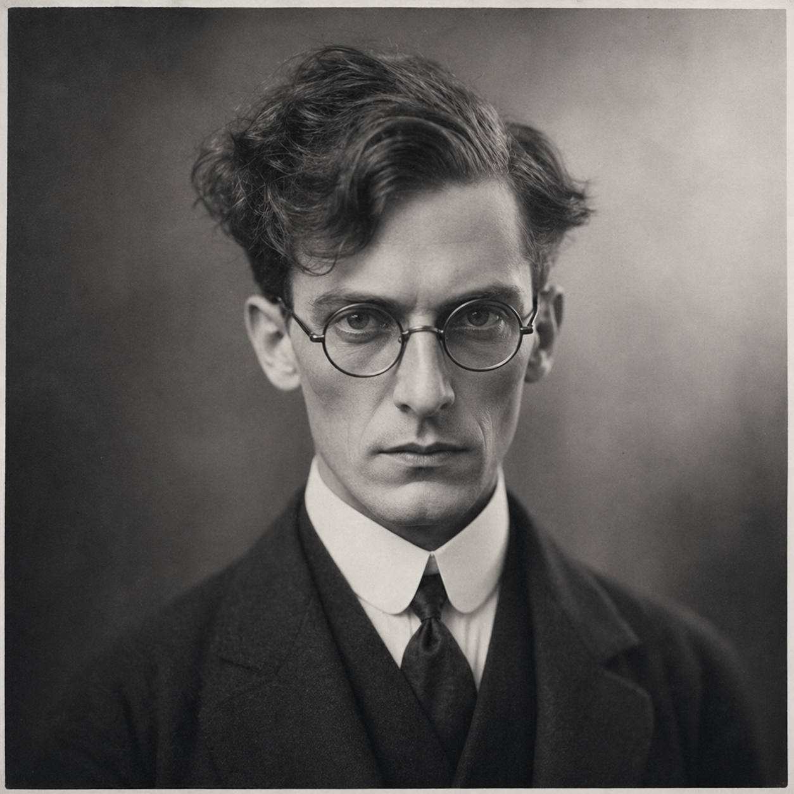

Dr Arthur Wren
(375 Points)
Male; Age 38; 5'8", 145 lbs; Tall, thin, owlish, and distracted, with ink on his cuffs, chemical burns on his fingers, and a stare that goes cold and precise the moment a room becomes uncanny.
| ST: 9/13 [-10] | IQ: 20 [175] | Speed: 7.00 |
| DX: 15 [60] | HT: 13/14 [30] | Move: 7 |
| Dodge: 7 |
Advantages
Eidetic Memory 2 [60]; Intuition [15]; Lang: English (Native) [0]; Lang: German (Accented Spoken/Accented Written) [4]; Lang: Latin (Broken Spoken/Accented Written) [3]; Lang: Ancient Greek (Broken Spoken/Accented Written) [3]; Lang: Sanskrit (Broken Spoken/Accented Written) [3]; Luck [30]; Common Sense [10]; Danger Sense [15]; Intuitive Mathematician [25]; Lightning Calculator [0*]; Reputation +2 (Respected anomalous diagnostician among psychical researchers and difficult-evidence circles) [10] (Reaction: +2); Patron (American Society for Psychical Research) (12 or less) [10] (Secret: -5); Patron (Followers of the Right Hand) (15 or less) [20] (Equipment: Standard, +5; Special Qualities (Access to Magic in Non-magical World): Very Unusual, +10; Secret: -5; Subtraction (Minimal Intervention): -5); Strong Will +3 [12] (Will: 23).
*Cost modifiers: Intuitive Mathematician.
Disadvantages
Easy to Read [-10]; Duty (Followers of the Right Hand) (15 or less) [-25] (Involuntary: -5; Subtraction (Extremely Hazardous): -5); Enemy (Unknown Enemies of FRH) [-60] (Unknown: -5; Frequency of Submission: Fairly often (9-), ?1; Subtraction (Access to Magic in Non-magical World): -15); Flashbacks [-10]; Nightmares [-5]; Secret (Secret Psi) [-20]; Weirdness Magnet [-15].
Quirks
Quirk (Distrusts mirrors after bad vision episodes.); Quirk (Keeps burned notebooks no one else may read.); Quirk (Labels every sample jar twice.); Quirk (Sleeps in a chair when he has been working too long.); Quirk (Talks to instruments under his breath.). [-5]Powers
Astral Sight 1 [3]; Sense Aura 1 [3].
Skills
Accounting-19 [½]; Administration-20 [½]; Astral Sight-17 [½] (Fatigue: 0, Range: 1 yd, Area: self, Maintain: infinite, Page: P11); Biochemistry/TL6-18 [½]; Chemistry/TL6-19 [½]; Detect Lies-19 [½]; Diagnosis/TL6-19 [½]; Diagnosis/TL6 (Psychiatric)-19 [½]; Electronics/TL6 (Sensors)-19 [½]; Engineer/TL6 (Electrical)-21 [1½]; Engineer/TL6 (Mechanical)-21 [1½]; Forensics/TL6-19 [½]; Hypnotism-19 [½]; Jeweler/TL6-19 [½]; Law-19 [½]; Mathematics-20 [1]; Mechanic/TL6 (Clockwork)-20 [½]; Mechanic/TL6 (Electrical)-20 [½]; Occultism-20 [½]; Paraphysics/TL6-18 [½]; Photography-20 [½]; Physician/TL6-19 [½]; Physician/TL6 (Psychiatric)-19 [½]; Physics/TL6-20 [1]; Physiology/TL6-19 [1]; Psionics/TL6-18 [½]; Psychology-19 [½]; Research-20 [½]; Sense Aura-17 [½] (Fatigue: 0, Range: Touch Only, Area: self, Maintain: min., Page: P16); Weird Science-19 [1].
Description
Dr Arthur Wren made his reputation in the difficult territory where medicine, physics, psychical research, and embarrassment overlap. He was the sort of boy who remembered everything, the sort of student who could not leave a problem alone once it lodged under the skin, and the sort of man who discovered early that a first-rate mind is not always a comfort to its owner. Arthur learned languages the way other men collected tools, trained himself in medicine and diagnosis, and cultivated the severe habits of a researcher who trusted records, measurements, and repeated tests far more than he trusted revelation. Even before the supernatural entered his life openly, he was already the kind of person who believed that if something uncanny had happened, then something had happened, and that somewhere in the room there had to be a residue, a trace, an error term, a material irregularity that could be isolated if one were patient enough and exact enough.That conviction is what drew him toward psychical research instead of away from it. Arthur never became a mystic. He did not want séances, grand pronouncements, or soft talk about mysteries beyond reason. What he wanted was process. He wanted the notebooks, the controlled conditions, the wrong photograph that showed too much, the sample jar that would not behave like any sample jar ought to, the witness report that looked hysterical until one detail repeated in a second case and then a third. The American Society for Psychical Research gave him a respectable door into that world, and the Followers of the Right Hand gave him a far less respectable one. Between them he became a specialist in hauntings, psychic residue, impossible physical traces, and the kind of evidence ordinary institutions prefer to misfile rather than explain.
Arthur's gifts only complicated matters. He has just enough psi to make his professional life worse: enough to catch flashes of aura, enough to glimpse what should not be visible, enough to know that some impossible things are not delusion or fraud. It is not the sort of power that lets him stride confidently through the dark. It is the sort that ruins a man's sleep, leaves him staring too long at mirrors or emptied rooms, and makes him wonder whether the apparatus is wrong by one brass screw, one harmonic assumption, one tiny failure of calibration. That anxiety turned him into a maker as much as a theorist. Arthur does not only study strange phenomena; he builds for them. He designs sensors, modifies instruments, burns his fingers on experiments, labels every jar twice, and keeps working long after prudence would send a healthier man to bed. If the world insists on being scientifically impossible, then he intends to meet it with better science.
In person he is all angles, ink-stained cuffs, chemical burns, exhausted discipline, and cold precision when a room turns uncanny. He is easy to read in the worst possible way: too honest in his concentration, too transparent in his alarm, too visibly offended when reality refuses to behave. People sometimes mistake that for fragility. They are usually wrong. Arthur is not brave because he is unafraid. He is brave because he keeps going back to the evidence after fear, after nightmares, after flashbacks, after the moment in every case when he realizes that what he is seeing should not exist. He treats the impossible as if it can be reconstructed, measured, and survived, and that stubbornness has made him invaluable to anyone forced to live in FRH's stranger corners.
For a new companion, the important thing to understand is that Arthur is not an answer machine and not a wizard in a lab coat. He is a forensic metaphysician: a difficult, brilliant, overworked anomalous scientist who wants the haunting to confess itself properly, the residue to settle into a pattern, and the impossible to submit, at least for one page of notes, to the dignity of method.